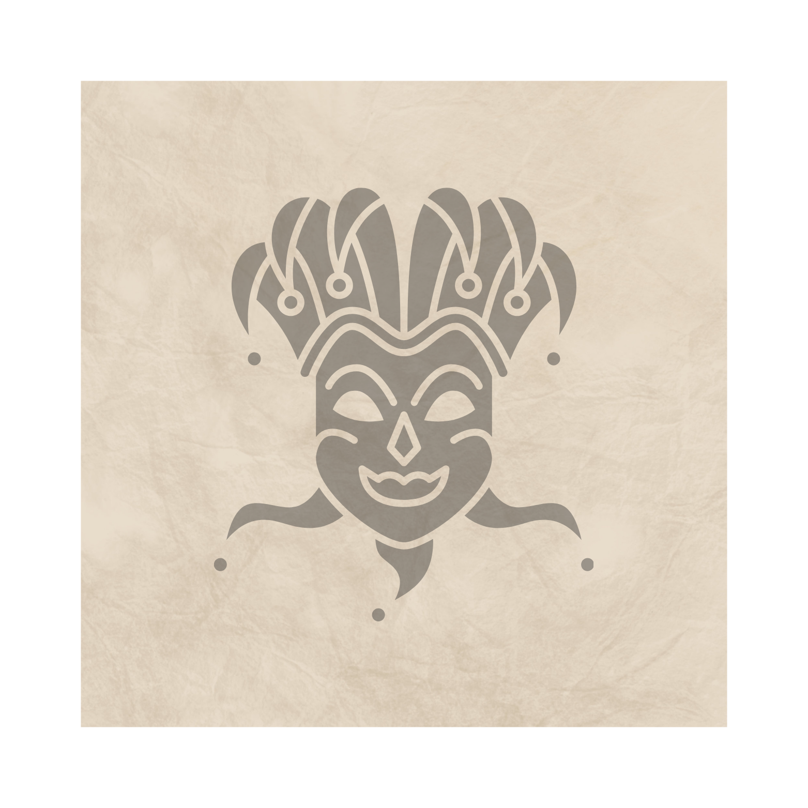

Dia 1
O grupo se reúne e encontra um reino subterrâneo desconhecido.
Resgatar a parente perdida de Kaelen (companheiro de equipe)
O grupo se reúne e encontra um reino subterrâneo desconhecido.
Derrotam o sacerdote e descobrem uma cidade inteiramente controlada.

Derrotar o Deus falso que a cidade segue.